Bmw 1 serije
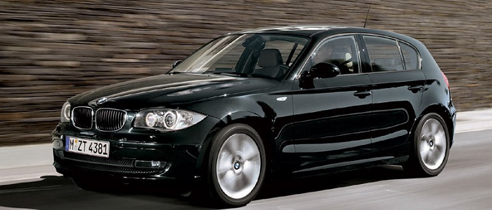Bmw 2 serije
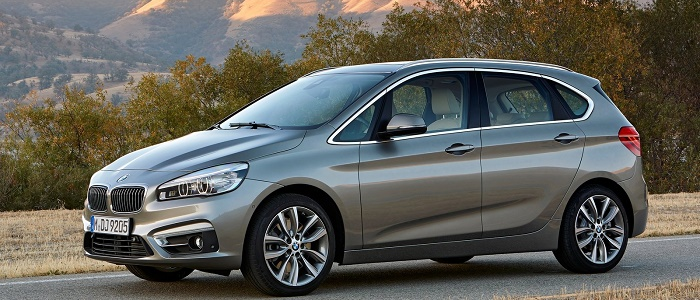Zadovoljstvo u vožnji puta dva: Modeli BMW Serije 2 ubrizgavaju tipično BMW zadovoljstvo u vožnji u segment kompaktnih vozila. BMW Serije 2 Coupé kombinuje uzbudljivu dinamičnost i samodovoljan dizajn sa podsećanjem na legendarne kupee u istoriji BMW-a. Rezultat: vozilo za gas do daske kad je zadovoljstvo u vožnji posredi. Podjednako dinamičan: the BMW Serije 2 kabriolet. Od suženog prednjeg dela do izduženog zadnjeg, on zrači kompaktnom elegancijom u dužini od 4,5 metra. Posebno kada je meki krov zatvoren i kada jedna od tri boje koje su na raspolaganju naglasi kontrast sa farbom karoserije
Bmw 3 serije

BMW serije 3 je automobil iz srednje klase njemačke marke BMW i proizvodi se od 1975. godine. Trenutačno je u proizvodnji peta generacija. Trojka je najprodavaniji BMW-ov model te nosi oko 40% ukupne BMW-ove proizvodnje te ujedno jedan od najpopularnijh automobila u svijetu.
Bmw 4 serije
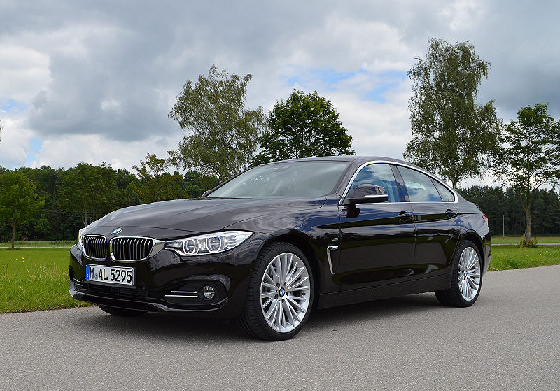BMW serije 3 je automobil iz srednje klase njemačke marke BMW i proizvodi se od 1975. godine. Trenutačno je u proizvodnji peta generacija. Trojka je najprodavaniji BMW-ov model te nosi oko 40% ukupne BMW-ove proizvodnje te ujedno jedan od najpopularnijh automobila u svijetu.
Bmw 5 serije
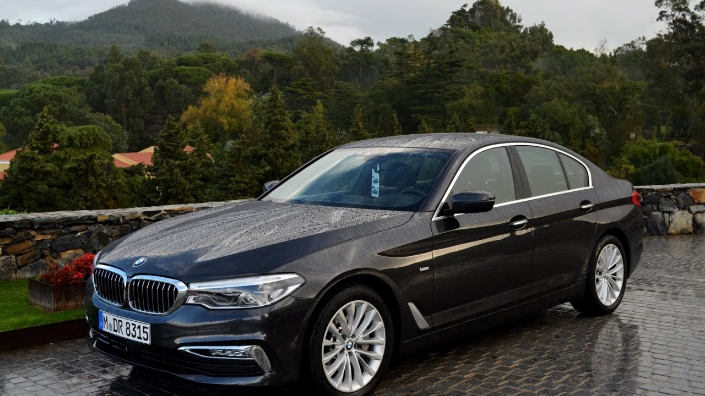BMV serije 5 je automobil proizveden od strane BMV-a od 1972. godine. On je naslednik limuzine nove klase i trenutno je u sedmoj generaciji. U početku, serija 5 bila je dostupna samo u karoseriji limuzine. Stilo karoserije karavana (tzv. "Touring") dodato je 1991. i fastback sa 5 vrata (pod nazivom "Gran Turismo") proizveden je od 2009. do 2017. godine.
Bmw 6 serije
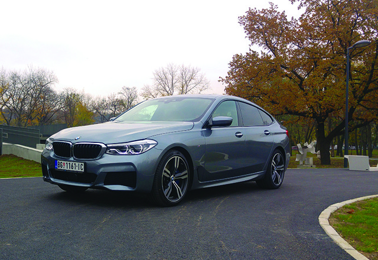BMW serije 6 je luksuzni GT njemačke marke BMW i proizvodi se od 1976. godine, s prestankom od 1989. do 2003. kada je na tržištu bila serija 8. Sve generacije su temeljene na seriji 5
Bmw 7 serije
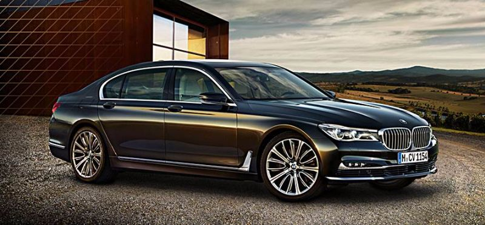BMW serije 7 je automobil iz gornje klase njemačke marke BMW i proizvodi se od 1977. godine. Krajem 2008. u proizvodnju je krenula peta generacija.
Bmw 8 serije
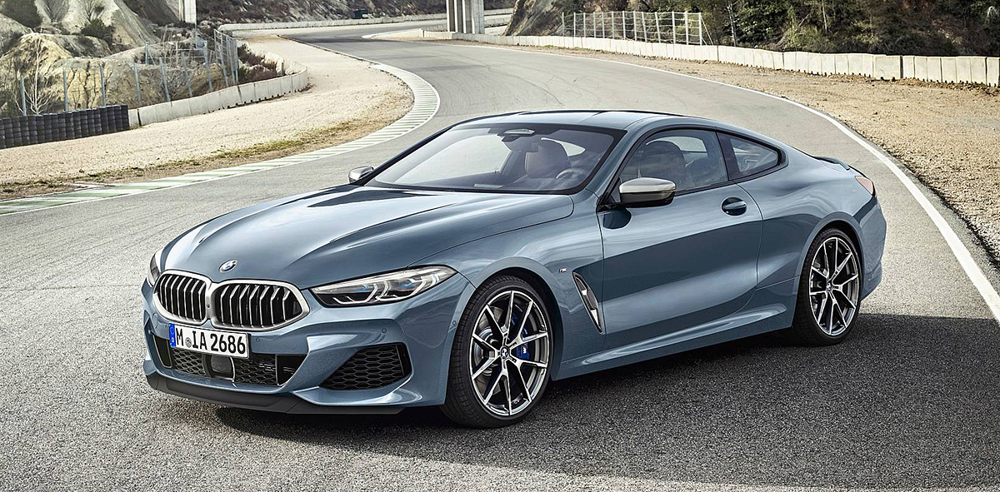Impresivno do poslednje niti. Dok izuzetne završne boje ističu pojavu modela BMW serije 8 Coupé, luksuzni materijali sa stilskim kontrastnim štepovima i otmenim ukrasnim elementima krase sportski enterijer – idajući mu poseban izgled visokog kvaliteta. Ovo je posebno naglašeno u pozicioniranim perforacijama i specijalnom tapacirungu opcionalnih multifunkcionalnih sedišta. Kombinujući vrhunske performanse sa najvišim kvalitetom i stvarajući ekstremno sportski i elegantan ambijent u enterijeru.
Bmw X serije 1
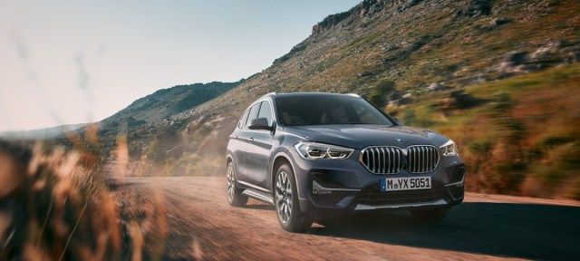BMW X1 je kompaktni terenski automobil koji proizvodi nemačka fabrika automobila BMW. Proizvodi se od 2009. godine.
Bmw X serije 2
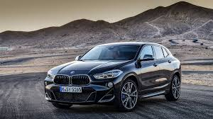Apsolutno jedinstven. Ekstremno izuzetan. Novi BMW X2 jasno pokazuje sportske ambicije već na prvi pogled. Zahvaljujući smeloj atletskoj građi, on donosi dinamične i agilne performanse koje nemaju premca u ovoj klasi. Zajedno sa enterijerom visokog kvaliteta i mnogim inovativnim tehnologijama, on je ekstrovertni protagonista novog doba. Da li ste spremni?
Bmw X serije 3
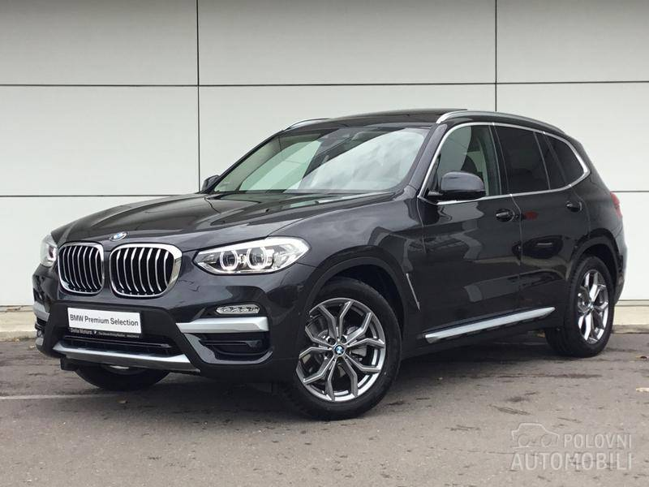BMW je unapredio model 2005 i promenio kalup 2007 godine menjanjem branika, motora enterijera i trapa. Oblikovana ručica menjača, savršeno je pozicionirana, a tu je i „aj drajv“ rotacioni prekidač koji olakšava upravljanje brojnim sistemima. Prtljažnik ima zapreminu od čak 550 litara, a obaranjem zadnje klupe on se proširuje do 1.600 litara. Za razliku od većine novih dizela koji maksimum obrtnog momenta dostižu pri 2.000 obrtaja, BMW-ov dvolitraš najvećom vučnom silom raspolaže već pri 1.750 obrtaja.
Bmw X serije 4
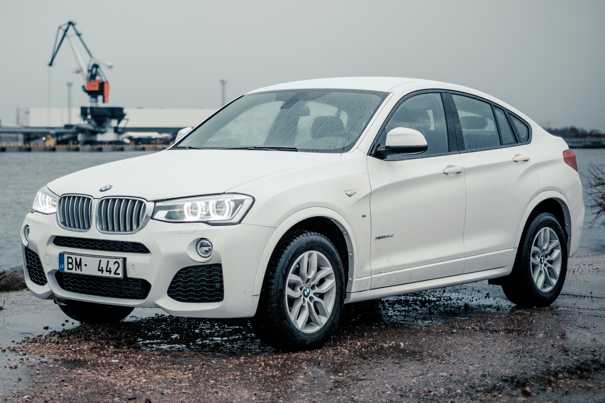BMW AG (IPA: O ovoj zvučnoj datoteci /ˈbeːˈʔɛmˈveː/; izvorno inicijalizam za nem. Bayerische Motoren W (VW group cars)) nemačka je multinacionalna kompanija koja trenutno proizvodi luksuzne automobile i motocikle, a takođe je proizvodila i avionske motore do 1945. godine.Kompanija je osnovana 1916. godine i sedište joj je u Minhenu (Bavarska). BMW proizvodi motorna vozila u Nemačkoj, Brazilu, Kini, Indiji, Južnoj Africi, Ujedinjenom Kraljevstvu i Sjedinjenim Državama. Godine 2015, BMW je bio dvanaesti najveći proizvođač motornih vozila na svetu — sa 2.279.503 proizvedena automobila. Porodica Kvant je dugogodišnji vlasnik deonica kompanija, a veći ostatak deonica je fri-flout.Automobili se prodaju pod brendovima BMW (uz podbrendove BMW M za performans modele i BMW i za plagin električna auta), Mini i Rols-Rojs. Motocikli su na tržištu pod brendom BMW Motorrad.
Bmw X serije 5
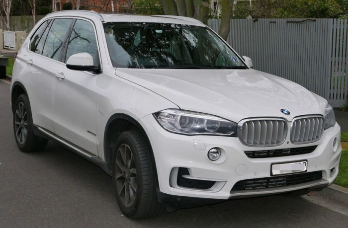BMW X5 je luksuzni SUV (Sport Utility Vehicle) koji se u prodaji po prvi put pojavio 2000. godine, a baziran je na platformi tadašnje generacije BMW-a serije 5. X5 je ujedno bio i prvi terenac marke BMW.X5 je trenutačno dostupan s tri benzinska i jednim dizelskim motorom. Ponudu benzinskih motora otvara 3-litreni šesterocilindraš s 231 KS, a dopunjuju dva osmocilindarska od kojih manji ima obujam od 4,4 litre i razvija snagu od 320 KS dok veći ima obujam od 4,8 litara i razvija snagu od 360 KS. Jedini dizelaš u ponudi ima šest cilindara i obujam od 3 litre, a razvija snagu od 218 KS.
Bmw X serije 6

BMW X6 je luksuzni terenac koji ima dizajn coupea. Službeni naziv je SAC odnosno Sports Activity Coupe. Motori i sve ostalo je preuzeto s X5 modela